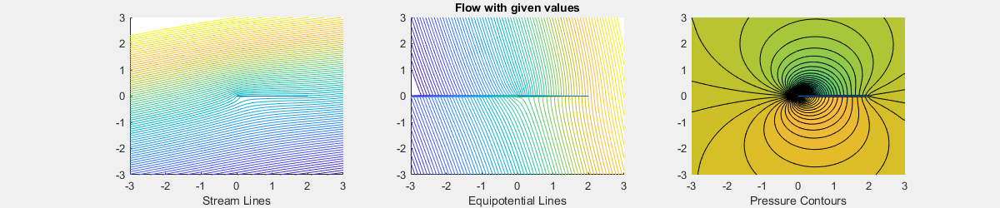
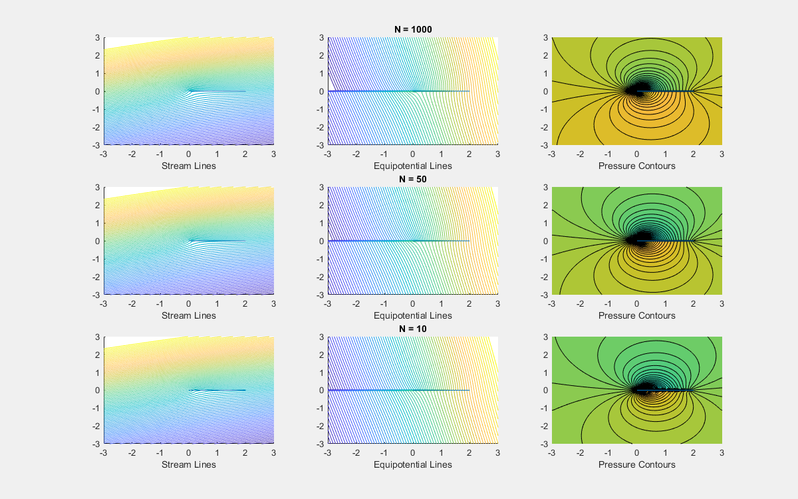
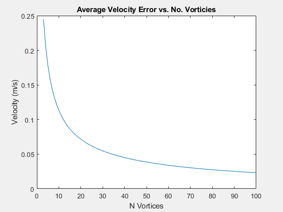
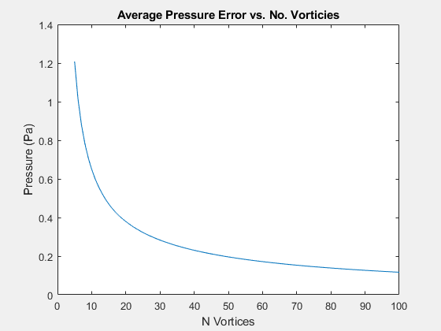
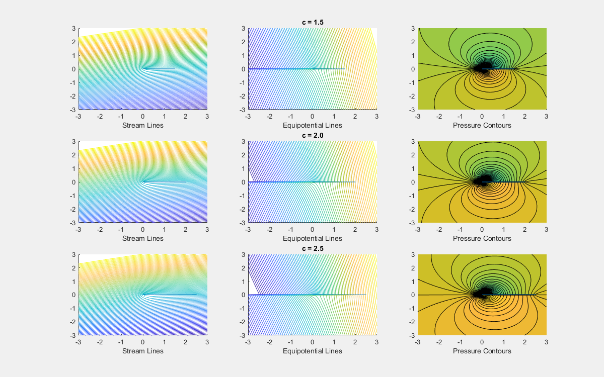
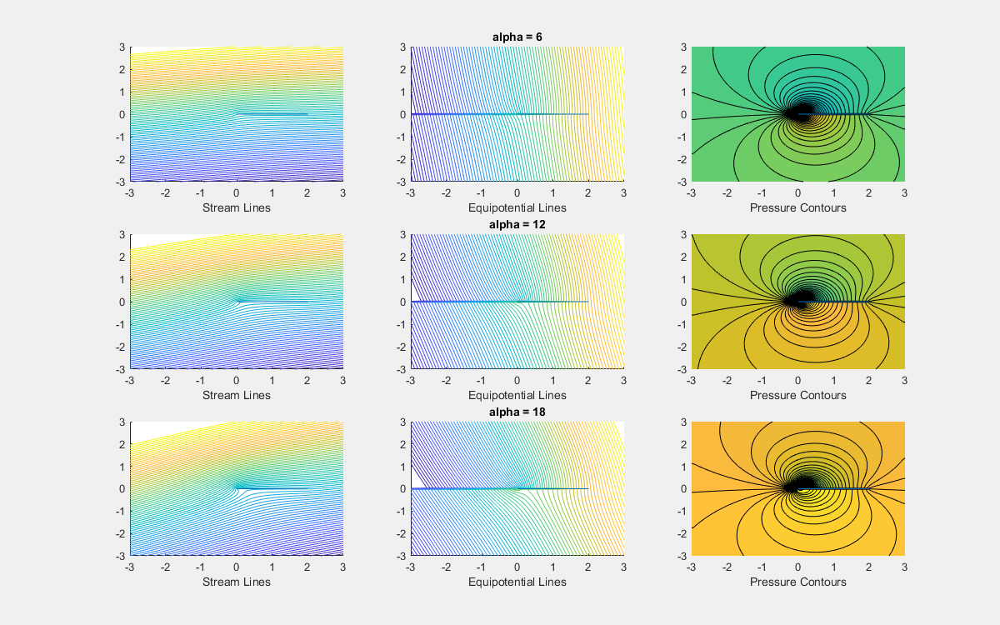
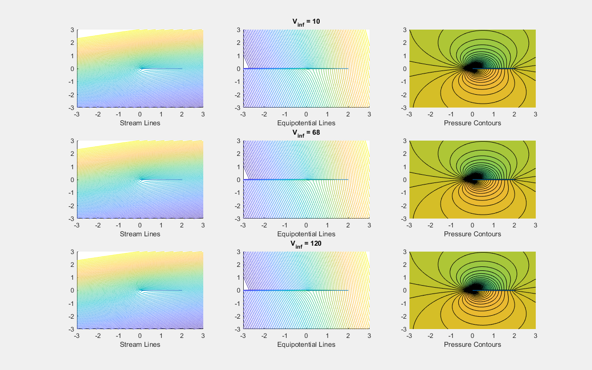

Contents
clear, clc, close all c = 2; % m alpha = 12; % degrees V_inf = 68; % freestream velocity p_inf = 101.3e3; % freestream pressure rho_inf = 1.225; % freestream density plotting = true; V = zeros(100,100,98); P = zeros(100,100,98); N = 1000; fig = 1; rows = 1; row = 0;
Visualizing The Flow With Given Values
name = 'Flow with given values';
[Vactual,Pactual,fig] = Plot_Airfoil_Flow(c,alpha,V_inf,p_inf,rho_inf,N,plotting,fig,rows,row,name);
 Checking the effect of N on the accuracy of velocity and pressure
close all plotting = false; for N = 3:100 [V(:,:,N-2), P(:,:,N)] = Plot_Airfoil_Flow(c,alpha,V_inf,p_inf,rho_inf,N,plotting,rows,row,name); end DV = zeros(98,1); DP = zeros(98,1); for i = 1:98 DV(i) = mean(abs(Vactual-V(:,:,i)),'all'); DP(i) = mean(abs(Pactual-P(:,:,i)),'all'); end plotting = true; N = 1000; rows = 3; row = 0; name = 'N = 1000'; Plot_Airfoil_Flow(c,alpha,V_inf,p_inf,rho_inf,N,plotting,fig,rows,row,name); N = 50; row = 3; name = 'N = 50'; Plot_Airfoil_Flow(c,alpha,V_inf,p_inf,rho_inf,N,plotting,fig,rows,row,name); N = 10; row = 6; name = 'N = 10'; [~,~,fig] = Plot_Airfoil_Flow(c,alpha,V_inf,p_inf,rho_inf,N,plotting,fig,rows,row,name); figure plot(3:100,DV) title('Average Velocity Error vs. No. Vorticies') ylabel('Velocity (m/s)') xlabel('N Vortices') figure plot(5:100,DP(3:end)) title('Average Pressure Error vs. No. Vorticies') ylabel('Pressure (Pa)') xlabel('N Vortices') fprintf(['Figure 2 shows that there is not a significant difference in\n'... 'the velocity and pressure graphs in between N=50 and N=1000, but\n'... 'there is a difference in the pressure contours. Figure 2 also shows that\n'... 'N=10 has a very large difference in all three plots, and does not do a\n'... 'good job of presenting the data. Figures 3 and 4 show how the average\n'... 'velocity and pressure errors change with respect to N. As expected the\n'... 'error decreases with an exponential decay.\n\n'])
Figure 2 shows that there is not a significant difference in the velocity and pressure graphs in between N=50 and N=1000, but there is a difference in the pressure contours. Figure 2 also shows that N=10 has a very large difference in all three plots, and does not do a good job of presenting the data. Figures 3 and 4 show how the average velocity and pressure errors change with respect to N. As expected the error decreases with an exponential decay.  
Studying the Effect of c, alpha, and V_inf
close all plotting = true; N = 1000; c = [1.5,2,2.5]; alpha = [6,12,18]; V_inf = [10,68,120]; rows = 3; row = 0; name = sprintf('c = %1.1f',c(row/3+1)); Plot_Airfoil_Flow(c(row/3+1),alpha(2),V_inf(2),p_inf,rho_inf,N,plotting,fig,rows,row,name); row = 3; name = sprintf('c = %1.1f',c(row/3+1)); Plot_Airfoil_Flow(c(row/3+1),alpha(2),V_inf(2),p_inf,rho_inf,N,plotting,fig,rows,row,name); row = 6; name = sprintf('c = %1.1f',c(row/3+1)); [~,~,fig] = Plot_Airfoil_Flow(c(row/3+1),alpha(2),V_inf(2),p_inf,rho_inf,N,plotting,fig,rows,row,name); row = 0; name = sprintf('alpha = %d',alpha(row/3+1)); Plot_Airfoil_Flow(c(2),alpha(row/3+1),V_inf(2),p_inf,rho_inf,N,plotting,fig,rows,row,name); row = 3; name = sprintf('alpha = %d',alpha(row/3+1)); Plot_Airfoil_Flow(c(2),alpha(row/3+1),V_inf(2),p_inf,rho_inf,N,plotting,fig,rows,row,name); row = 6; name = sprintf('alpha = %d',alpha(row/3+1)); [~,~,fig] = Plot_Airfoil_Flow(c(2),alpha(row/3+1),V_inf(2),p_inf,rho_inf,N,plotting,fig,rows,row,name); row = 0; name = sprintf('V_{inf} = %d',V_inf(row/3+1)); Plot_Airfoil_Flow(c(2),alpha(2),V_inf(row/3+1),p_inf,rho_inf,N,plotting,fig,rows,row,name); row = 3; name = sprintf('V_{inf} = %d',V_inf(row/3+1)); Plot_Airfoil_Flow(c(2),alpha(2),V_inf(row/3+1),p_inf,rho_inf,N,plotting,fig,rows,row,name); row = 6; name = sprintf('V_{inf} = %d',V_inf(row/3+1)); [~,~,fig] = Plot_Airfoil_Flow(c(2),alpha(2),V_inf(row/3+1),p_inf,rho_inf,N,plotting,fig,rows,row,name); fprintf(['The effects of c are slight but noticeable, There are changes\n'... 'in all three plots but the most noticeable are in the stream lines and\n'... 'pressure contours. The stream lines and pressure contours for the longer\n'... 'chord generally have a little more separation between them.\n\n']) fprintf(['Angle of attack seems to have the most effect on the plots,\n'... 'of course the differences in AOA are probably more significant than the\n'... 'other permutations. Alpha completely changes the plots with an AOA of 18\n'... 'the streamlines have significant separation and the pressure contours\n'... 'mainly change color entirely.\n\n']) fprintf(['Free stream velocity seems to have the least effect on the\n'... 'plots. I am not really able to tell the difference between the different\n'... 'velocities.\n\n'])
The effects of c are slight but noticeable, There are changes in all three plots but the most noticeable are in the stream lines and pressure contours. The stream lines and pressure contours for the longer chord generally have a little more separation between them. Angle of attack seems to have the most effect on the plots, of course the differences in AOA are probably more significant than the other permutations. Alpha completely changes the plots with an AOA of 18 the streamlines have significant separation and the pressure contours mainly change color entirely. Free stream velocity seems to have the least effect on the plots. I am not really able to tell the difference between the different velocities.  
Functions Called
The following functions were built and called as part of this assignment.
function [V,pressure,fig] = Plot_Airfoil_Flow(c,alpha,V_inf,p_inf,rho_inf,N,plots,fig,rows,row,name) %Plot_Airfoil_Flow plots the contour lines of a given flow % The flow is defined by the cord length(c), angle of attack(alpha), the % freestream velocity(V_inf), the freastream pressure(p_inf), the % freestream density(rho_inf), and the number of discrete vorticies(N) %% Define Domain xmin=-3; xmax=3; ymin=-3; ymax=3; %% Define Number of Grid Points nx=100; % steps in the x direction ny=100; % steps in the y direction [x,y]=meshgrid(linspace(xmin,xmax,nx),linspace(ymin,ymax,ny)); alpha = alpha*pi/180; VorP = linspace(0,c,N); VorP = VorP(2:end-1); dx = c/N; gammas = 2*alpha*V_inf*sqrt((1-VorP/c)./(VorP/c)); Gammas = gammas*dx; %% Stream and Potential Functions % Uniform Flow u = V_inf*cos(alpha); v = V_inf*sin(alpha); psiU = u*y - v*x; phiU = u*x + v*y; % Vortex Flow radius=@(x,y,x1,y1) sqrt((x-x1).^2+(y-y1).^2); theta =@(x,y,x1,y1) atan2((y-y1),(x-x1)); psiV = zeros(nx,ny); phiV = zeros(nx,ny); for i=1:numel(VorP) psiV = psiV + Gammas(i)./(2*pi).*log(radius(x,y,VorP(i),0)); phiV = phiV - Gammas(i)./(2*pi).*theta(x,y,VorP(i),0); end StreamFunction = psiV + psiU; PotentialFunction = phiV + phiU; %% Determine color levels for contours levmin = StreamFunction(1,nx); % defines the color levels -> trial and error to find a good representation levmax = StreamFunction(ny,nx/2); levels = linspace(levmin,levmax,80)'; if plots == true figure(fig) set(gcf, 'Position', [200, 150, 1200, 250*rows]) subplot(rows,3,1+row) hold on contour(x,y,StreamFunction,levels) plot([0 c], [0 0]) xlabel('Stream Lines') subplot(rows,3,2+row) hold on contour(x,y,PotentialFunction,levels) plot([0 c], [0 0]) title(name) xlabel('Equipotential Lines') end %% Velocity Functions V = gradient(PotentialFunction); q_inf = 1/2*rho_inf*V_inf^2; pressure = (1-(V./V_inf).^2)*q_inf+p_inf; levmin = min(min(pressure)); % defines the color levels -> trial and error to find a good representation levmax = max(max(pressure)); levels = linspace(levmin,levmax,100)'; if plots == true subplot(rows,3,3+row) hold on contourf(x,y,pressure,levels) plot([0 c], [0 0]) xlabel('Pressure Contours') fig = fig+1; end end